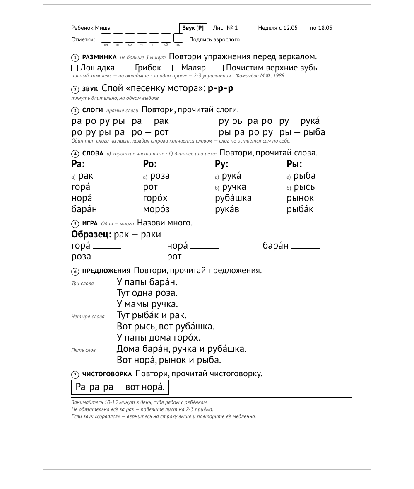
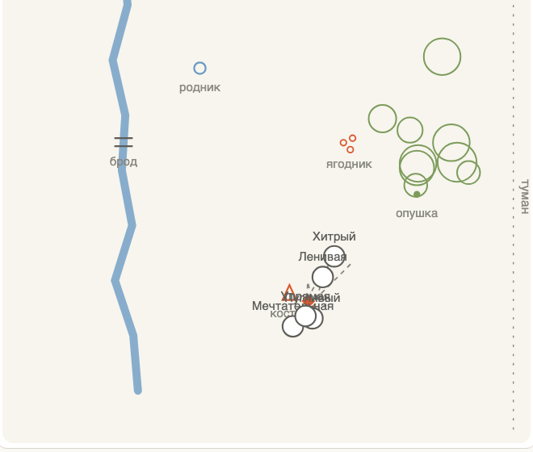
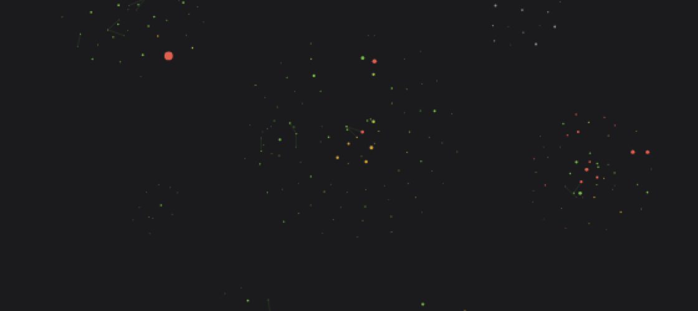
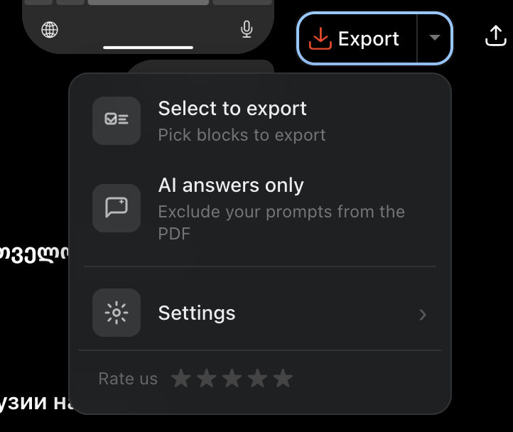
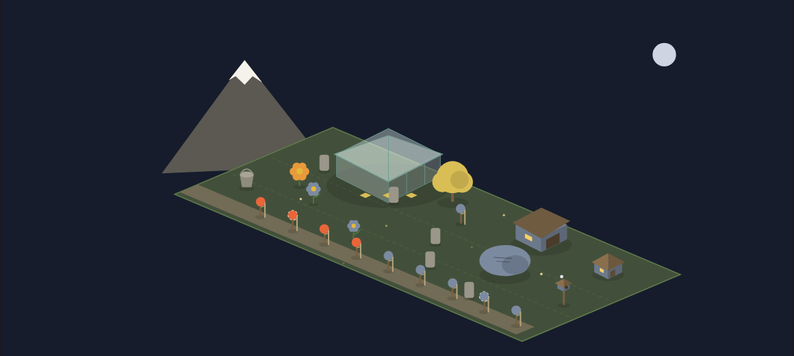

Developing assistants, tools, games, and stuff.
Made by with AI.
Work

Speech-therapy material assembled for one specific child: every word filtered against the sounds that child cannot say yet.

A focus timer with no digits on screen. Time is carried by sound — a flight toward a star, and arrival ends the session.

A watchable simulation: a handful of inhabitants, simple rules, one valley. Nothing is scripted — the story is whatever emerges.

Raw search data turned into a sky you can navigate: each star a query, its size the volume, its colour how crowded that door already is.

A Chrome extension turning a ChatGPT conversation into a clean PDF. In the store, 468 users, rendered on its own server.

A way of keeping context alive across sessions: each project holds its own memory in plain files, so work resumes instead of restarting.